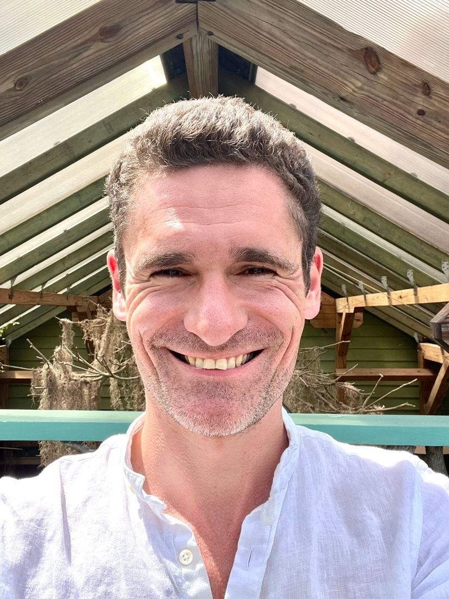
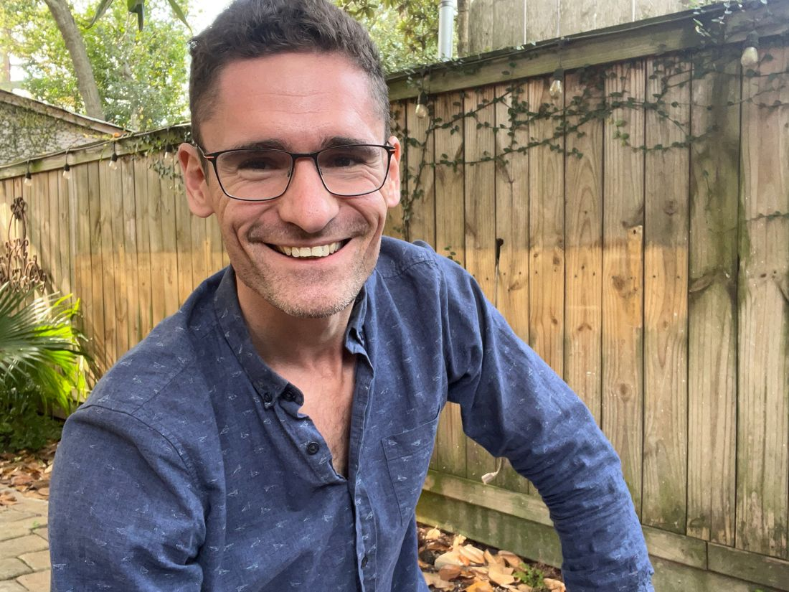

From a desert fast to a life of awakening.
Spiritual guide, certified life coach, and therapist-in-training based in New Orleans.

An experience that changed everything.
While preparing for a four-day fast in the desert, I had a profound experience of nonduality. It lasted two weeks and fundamentally shifted how I understood myself and the world.
It came after two years of intensive inner work with coaches, a medicine community, and a men’s group: confronting childhood wounds, my relationship with my parents, and the generational trauma of the Holocaust.
I was held along the way by the psychonauts, shamans, and magicians of New Orleans, and by my partner, the flint of my awakening.
Spirituality is part of being human.
Psychology & the sacred
Combining psychological clarity with the depth of spiritual inquiry makes life more balanced and profound.
Guidance after awakening
More people are waking up, yet there’s little clear guidance on what awakening is, or what comes after.
Wisdom for our time
We need new ways to integrate the world’s sacred traditions so we can live meaningful lives today.

Walking with you back to center.
Together we release the layers of self-betrayal, shame, doubt, and anxiety we took on to survive childhood. When they fall away, it feels like armor lifting from your shoulders.
You’ll feel it in your cells: steady eyes, a confident voice, a heart at peace. You will feel like your true self.
Stability before and after awakening
Liberation can be destabilizing if the ego isn’t ready, so the work builds psychological stability first.
Many traditions, no dogma
With gratitude to Saeed Khan and Chuck Ceraso, and the work of Adyashanti, Alan Watts, and Jack Kornfield.
Professional history.
- 2022 – nowGuidance focused on nonduality and awakening. Executive coach, and therapist-in-training at Loyola University New Orleans (M.S. Clinical Counseling).
- 2021 – nowShadow work and psychodrama with the Mankind Project.
- 2020Began work as a spiritual guide. Glean Spiritual Entrepreneurship Fellowship with Columbia Business School. Open Div Summit.
- 2019Fellow at the Sacred Design Lab. Presenter at the Community Innovators Gathering. Speaker, Humanist Community at Harvard.
- 2015B.A. Sociology, Yale University.
Life in New Orleans
Home with my partner and our cats, Muffin Man and Biscuit Boy. Foodies, aspiring gym rats, and X-Files fans.
Eight-ball at a dive bar is a favorite meditation. At night, I walk in quiet places and listen to the stars.
Books that shaped me
- The End of Your WorldAdyashanti
- Journey of the HeartJohn Welwood
- The Bhagavad GitaTraditional
- The Varieties of Religious ExperienceWilliam James
- On the Kabbalah and Its SymbolismGershom Scholem
- One Hundred Years of SolitudeGabriel García Márquez
From people I’ve worked with.
“Working with Daniel was a breath of much needed fresh air. He helped me articulate who I am and what I have to offer the world.”
RRae K.“His calm and supportive guidance allowed me to be vulnerable with myself, which led me to discover my life’s mission.”
MMerry-Nichole“Daniel will help you unravel your thoughts with a sensitivity that makes you feel seen, valued, and comfortable.”
AAnnelisa L.Watch their stories


Let’s get to know each other.
A free 30-minute consult to share your intentions and see if we’re a good fit.